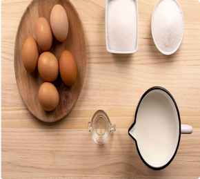
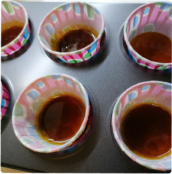

Были в Испании времена, когда это простое блюдо было королем в меню ресторанов Испании. В дальнейшем этот скромный десерт был изменен и дополнен шеф-поварами лучших ресторанов Испании. Кто-то заменял молоко на сливки или на их смесь. Кто-то использовал только желтки или добавлял сгущенное молоко. В самых изощренных использовались яйца с синей скорлупой от арауканских кур.
Нагреваем молоко с корицей и кожей лимона. Когда начнет закипать, убираем с огня и даем остыть в течение 30 минут.

2
Смешиваем яйца с сахаром, не спеша помешивая, но не взбиваем. Добавляем остывшее молоко и мешаем до тех пор, пока не растворится сахар. Процеживаем через сито, чтобы очистить от коры корицы и лимона.
Хитрости при приготовлении флана
Когда я только учился этому рецепту, у меня получался флан с трещинами на поверхности. Это может происходить по двум причинам. Или не залили воды в поднос, или приготовили крем миксером, таким образом в креме остается воздух. Не надо взбивать, перемешивайте все ингредиенты.
Не обязательно накрывать формочки фольгой, но нужно убедиться, чтобы вода не попала в крем.
3
Далее приготовим карамель. В кастрюлю поместим 4 столовых ложки сахара и такое же количество воды. На тихом огне доведем до кипения. Должна получится коричневая жидкость. Заливаем в формочки для флана, чтобы немного покрыть дно формочек. Затем неспеша заливаем наш крем. Формочки ставим на поднос с высокими бортами чтобы можно было залить водой, примерно с палец глубиной.

4
Далее ставим поднос в духовку на 25-30 минут или пробуя ввести палочку и она должна выйти сухой. Если вы уверены, что флан готов, оставьте его немного остыть и далее в холодильник на 24 часа.
С чем лучше сочетать флан и как подавать
Флан можно подавать со сливками или с фруктами
Не обязательно накрывать формочки фольгой, но нужно убедиться, чтобы вода не попала в крем.
Замечательный рецепт. Спасибо большое. Попробовала вся семья. Всем понравилось и было вкусно.